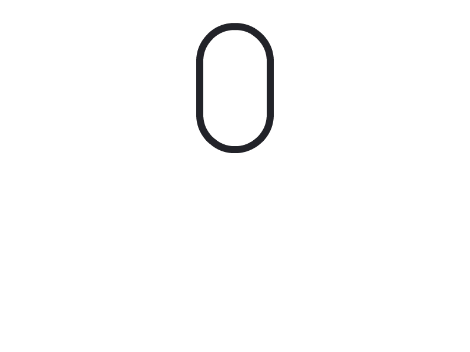
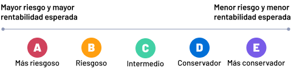

Situaciones
Nuestros tonos cambian según el contexto, por eso,
hablamos considerando la situación en la que se encuentra la persona usuaria.
Conoce las situaciones consideradas
Tarea completada
Notificamos que una tarea fue finalizada con éxito.
Para estos casos recomendamos los siguientes tonos:
Tono Conversacional
Redactamos nuestros mensajes como si estuviéramos en una conversación.
Ingresamos tu solicitud de cambio de fondos
Solicitud de cambio de fondos ingresada
Tono enérgico
Usamos signos de exclamación para dar énfasis de que se trata de una buena noticia y también para reconocer el trabajo
de la persona usuaria.
¡Recibimos tu solicitud!
Solicitud enviada
Tono breve
Comunicamos el mensaje de la forma más breve y clara posible.
Ingresamos tu solicitud con éxito
Tu solicitud se ha concretado de forma exitosa
Errores
Informamos que ha ocurrido un error.
No consideramos un error el mal ingreso de un dato por parte del usuario, esos casos son considerados como ingreso de datos incorrectos
Para estos casos recomendamos los siguientes tonos:
Tono Amable
Ofrecemos disculpas por el error.
Lo sentimos, hubo un error al cargar la información de tus cuentas. Por favor, vuelve a intentarlo
Hubo un error al cargar la información de tus cuentas. Vuelve a intentarlo
Tono Informativo
Entregamos la información necesaria del error.
Lo sentimos, hubo un error al cargar la infomación de tus cuentas. Por favor, vuelve a intentarlo
Lo sentimos, hubo un error. Vuelve a intentarlo
Tono propositivo
Al final del mensaje entregamos una opción o alternativa para alcanzar el objetivo.
Lo sentimos, hubo un error al cargar la información de tus cuentas. Por favor, vuelve a intentarlo
Lo sentimos, hubo un error al cargar la información de tus cuentas
Precondiciones no cumplidas
Informamos que una o varias precondiciones necesarias para ejecutar un proceso no se cumplen.
Para estos casos recomendamos los siguientes tonos:
Tono informativo
Entregamos información suficiente para que la persona conozca la precondición que no cumplió.
Debes contar con un mínimo de $2.000 pesos para girar
Saldo insuficiente
Tono Positivo
Evitamos usar negaciones como la palabra “NO”
Tienes un cambio de AFP en curso. Debes esperar a que el proceso finalice para girar
Tienes un cambio de AFP en curso No puedes girar hasta que el proceso finalice
Si no podemos evitar la negación o palabras que transmitan algún grado de negatividad, intentamos usar un lenguaje pasivo.
No se puede realizar el giro. Necesitas un mínimo de $2.000 pesos para girar
No puedes girar. Necesitas un mínimo de $2.000 pesos
Tono propositivo
Siempre que sea posible, ofrecemos una acción que permita cumplir la precondición o una alternativa diferente para alcanzar el objetivo.
El monto mínimo de Giro Diferido son $300.000 Por favor, intenta con Giro Fácil
El monto mínimo de Giro diferido son $300.000
Ingreso incorrecto de datos
Informamos que los datos entregados son incorrectos o con formato inválido.
Para estos casos recomendamos los siguientes tonos:
Tono informativo
Entregamos información suficiente para la persona entienda qué dato es incorrecto y cómo debería ser correcto.
Ingresa un correo válido como: joe@correo.com
Ingresa un correo válido
Tono Breve
Comunicamos el mensaje de la forma más breve y clara posible.
Clave incorrecta. Te quedan 2 intentos
La clave ingresada es incorrecta. Te quedan 2 intentos más
Tono positivo
Evitamos la negación con la palabra “NO”.
Clave incorrecta. Te quedan 2 intentos
La clave no es correcta. Te quedan 2 intentos
Cambios bloqueantes
Son aquellos casos donde las condiciones iniciales durante un proceso cambian, modificando o bloqueando su continuidad.
Para esto recomendamos los siguientes tonos:
Tono Informativo
Entregamos información suficiente para que la persona entienda lo que pasó y evite que vuelva a suceder.
Cerramos tu sesión.
Por motivos de seguridad, tu sesión se cierra luego de 20 minutos de inactividad
Tu sesión expiró por inactividad
Tono Propositivo
Siempre que se pueda, entregamos una solución al bloqueante.
Por tu seguridad, la clave de acceso ha sido bloqueada después de 3 intentos fallidos.
Recuperar clave
Por tu seguridad, la clave de acceso ha sido bloqueada, después de 3 intentos fallidos
Entrega de conocimiento
Informamos para dar conocimiento sobre algún tema en particular.
Para estos casos recomendamos los siguientes tonos:
Tono conversacional
Redactamos nuestros mensajes como si estuvieramos en una conversación.
¿Cómo será el pago de la PGU?
Si recibías tu pensión por depósito bancario y caja Los Héroes el pago será...
Nueva forma de pago de la PGU
Si el afiliado recibía su pensión por depósito bancario y caja Los Héroes el pago será...
Tono Informativo
Nuestro mensaje entrega información sin dejar de ser claro y conciso. Si usamos conceptos técnicos, los explicamos en el relato o con un enlace.
Debes cumplir con la edad legal de jubilación, tener mínimo 65 años en el caso de los hombres y 60 las mujeres
Debes cumplir con la edad de jubilación
Tono Didáctico
Podemos usar recursos complementarios al texto para reforzar el entendimiento de la información como: ilustraciones, gráficos, fotos, capturas o videos

Procesos de espera
Le pedimos un momento a la persona usuaria para que finalice el proceso.
Para estos casos recomendamos los siguientes tonos:
Tono amable
Somos amables al pedir un momento de espera.
Por favor espera, estamos validando tu identidad
Estamos validando tu identidad, espera un momento
Tono breve
Comunicamos el mensaje de la forma más breve y clara posible.
Estamos validando tu identidad.
Por favor, espera un momento
Estamos validando tu identidad vía biometría facial.
Por favor espera un momento a que termine el proceso
Tono informativo
Informamos acerca de qué proceso se está ejecutando, y si es posible, el tiempo estimado que tardará.
Este proceso podría tardar hasta 2 minutos
Este proceso podría tardar
Advertencias
Entregamos información para prevenir algún fallo, evitar la toma de decisiones sin considerar aspectos esenciales.
No consideramos como advertencia algo que impida el inicio de un proceso, esos casos son conocidos como Precondiciones no cumplidas
Para estos casos recomendamos los siguientes tonos:
Tono informativo
Informamos con detalle lo que va o podría ocurrir.
Si la suma de las rentabilidades anuales de todos tus giros de Cuenta 2 es menor a 30 UTM, no pagarás impuestos, pero si supera dicho monto, tendrás que pagar el Impuesto Global Complementario en la Declaración de Impuestos anual
Si la suma de las rentabilidades anuales tus giros de Cuenta 2 es menor a 30 UTM, no pagarás impuestos, pero si supera dicho monto, tendrás que pagar impuestos.
Tono propositivo
Si es posible, al final del mensaje entregamos un llamado que invite a realizar una acción que esté relacionada con lo que se está comunicando.
La sucursal de San Bernardo cerrará de forma permanente el viernes 28 de octubre de 2022. Te sugerimos visitar otras sucursales
La sucursal de San Bernardo cerrará de forma permanente el viernes 28 de octubre de 2022